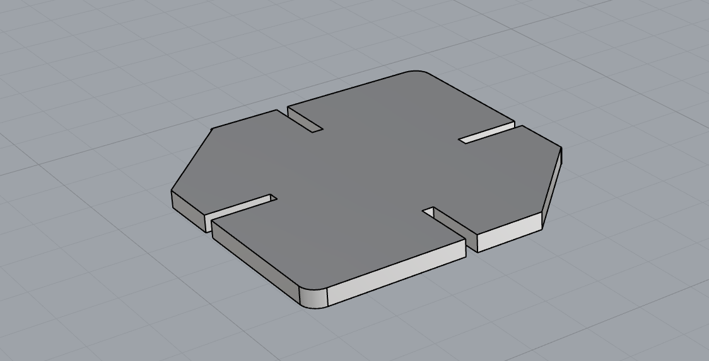

Below is the final output of my Press Fit Kit


At the beginning, I brainstormed some ideas by sketching different shapes that are a combination of circles, squares, triangles, etc. Since I wanted to build something that's very stable with multiple compartments for me to place some small containers on it, I decided to go for shapes that look more rectangular.
Afterwards, I recreated those shapes in Rhino. To decide on the width of the slot, I measured the thickness of the cardboard that I'm going to use and referred to my classmates' experiences assembling the pieces. Below is the shape in 3D view.
For laser cutting, I measured the length and width of the cardboards that I have to calculate the number of shapes that could fit on each. I created a file specifically for testing that contains slots that are 1.5mm, 2mm, and 2.2mm wide. I will print the testing file first before I print all of the pieces.
I went to the Mill for laser cutting. Based on other people's experiences, I adjusted the stroke to 0.001 in Adobe Illustrator and changed the artboard to the same dimension as my actual cardboard for printing. Even so, I still encountered a few technical issues that even the staff didn't know what the cause was. After printing out the test file with 2mm margin for the slot, I found it too narrow. I tested the 2.2mm version, which is still a bit challenging to fit them together but doable, so I went with it.

The final output contains 38 pieces in total. As the image below shows, I was able to put some gels and solution inside it for organization!

-----
Below is the source file
Biggest thanks to the 533 Support Group for all the help!